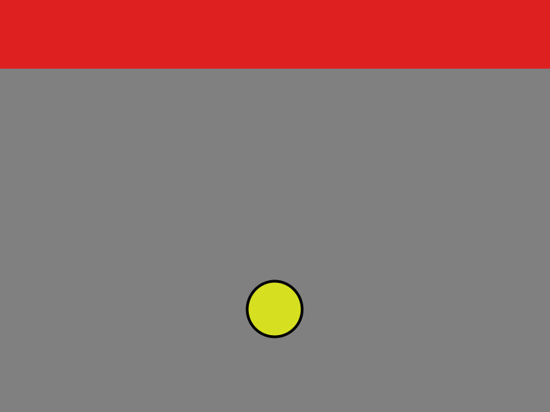
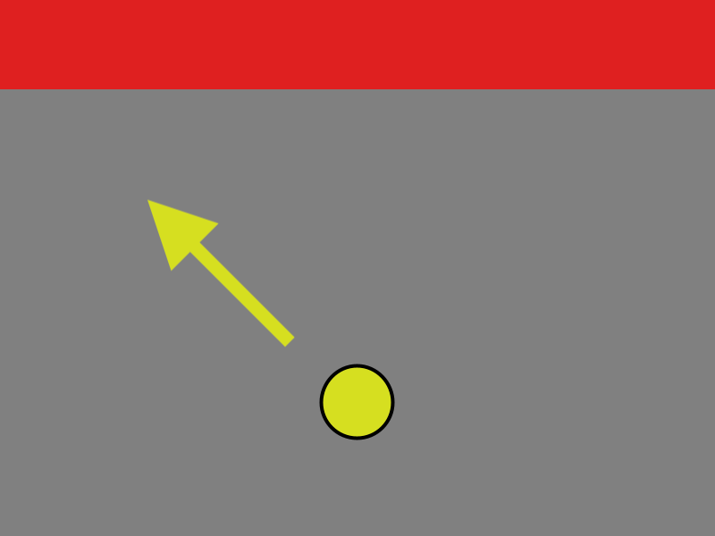
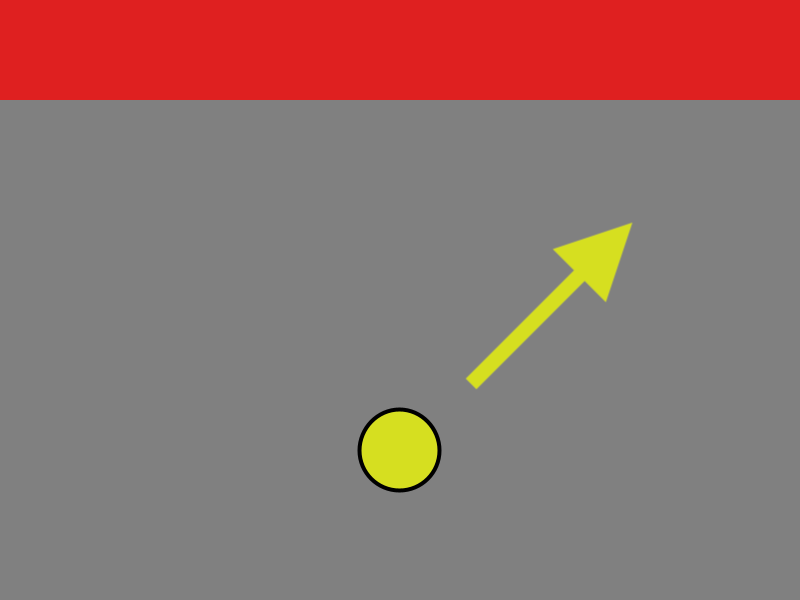
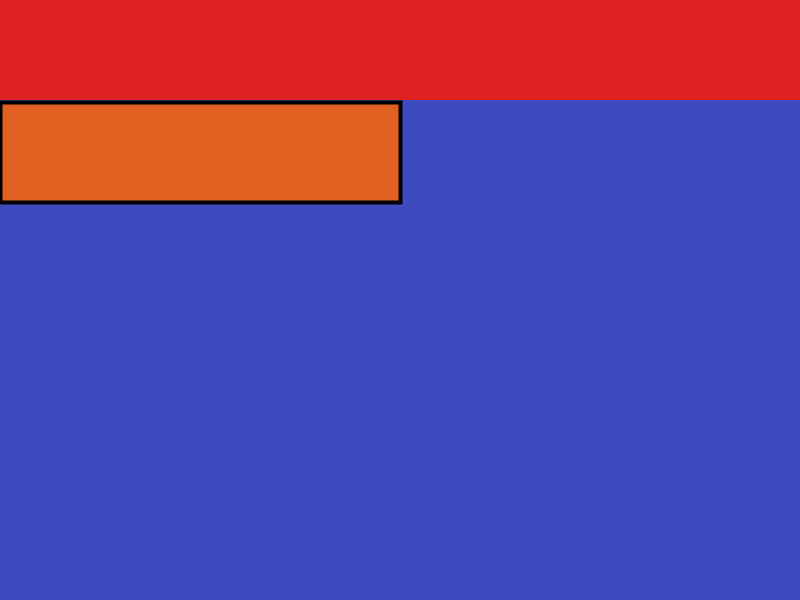
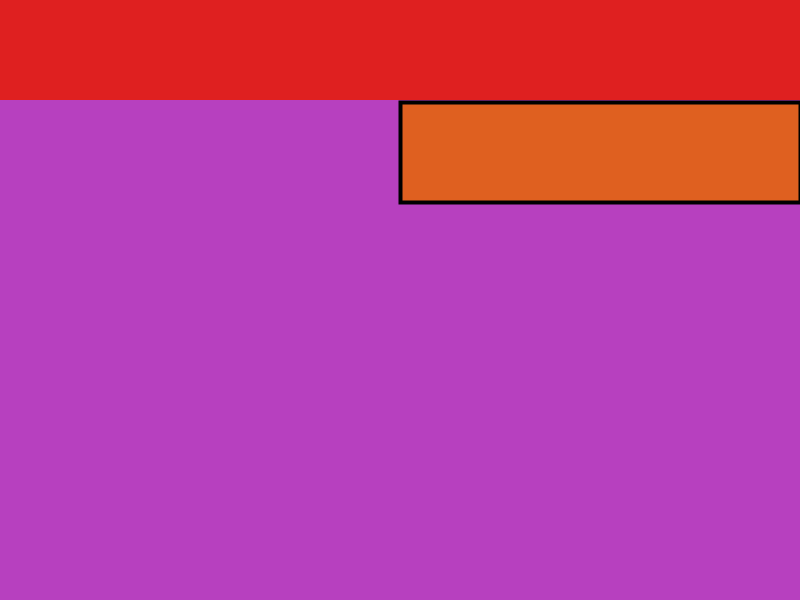
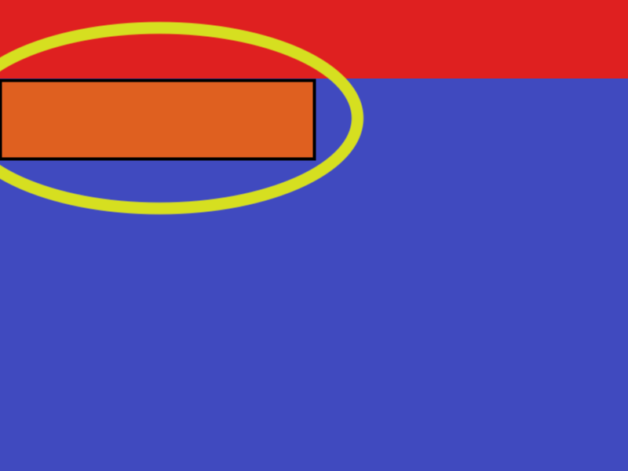
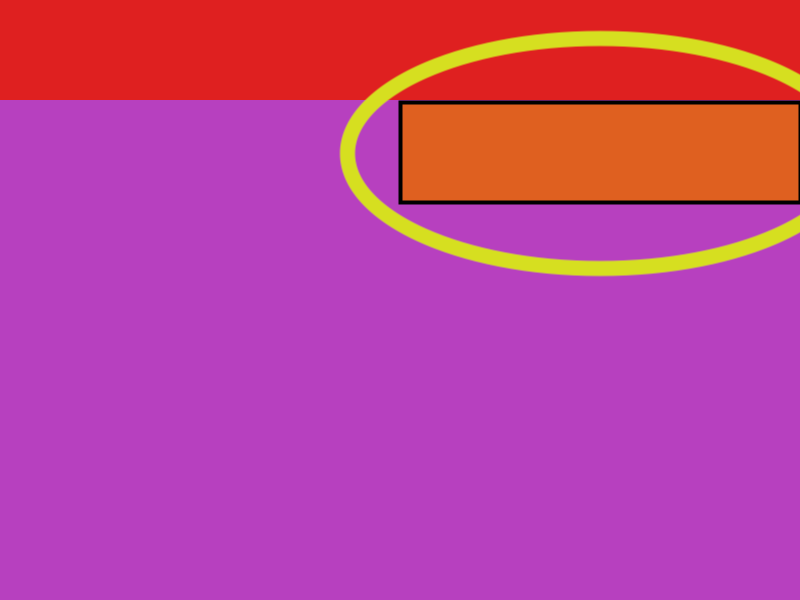
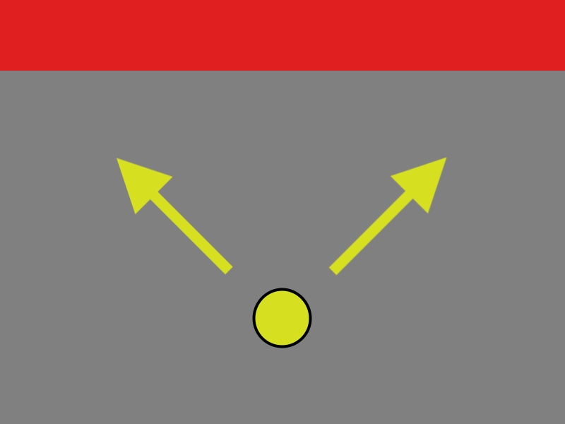
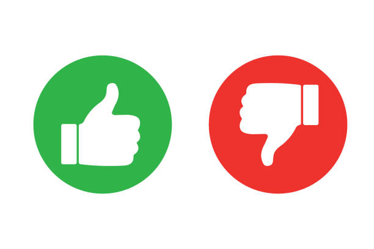
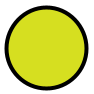

<!DOCTYPE html>
<html>
<head>
  <title>LAMI Kids</title>
  <script src="https://unpkg.com/jspsych@7.2.3"></script>
  <script src="https://unpkg.com/@jspsych/plugin-video-keyboard-response@1.1.1"></script>
  <script src="https://unpkg.com/@jspsych/plugin-html-keyboard-response@1.1.1"></script>
  <script src="https://unpkg.com/@jspsych/plugin-image-keyboard-response@1.1.1"></script>
  <script src="https://unpkg.com/@jspsych/plugin-preload@1.1.1"></script>
  <script src="https://unpkg.com/@jspsych/plugin-video-keyboard-response@1.1.1"></script>
  <link href="https://unpkg.com/jspsych@7.2.3/css/jspsych.css" rel="stylesheet" type="text/css" />
  <script src="https://ajax.googleapis.com/ajax/libs/jquery/3.6.0/jquery.min.js"></script>
</head>

<style>
.video-content  {
  max-width: 100%;
}

#experimentOuter {
  width: 800px;
  height: 600px;
  border: 2px solid black;
  display: flex;
  margin: auto;
}

#experimentInner {
  width: 100%;
  height: 100%;
  margin: 0;
  overflow: hidden;
}
</style>

<body>

<div id="experimentOuter"><div id="experimentInner"></div></div>
</body>
<script>
document.getElementById("experimentInner").focus();

var DEV = true;

var jsPsych = initJsPsych({
  display_element: "experimentInner",
  on_finish: async function(data) {
    jsPsych.getDisplayElement().innerHTML = '<p> Thank you for playing our game! We would like to give you a certificate for your help with science!</p>' +
    '<p> Saving your data now...' +
     '<span id="done" style="visibility: hidden;">done!</span></p>';
     //  Save data via HTTP POST
    let dataToServer = {
        'id': id,
        'extension': 'csv',
        'directory': 'data',
        'experimentName': DEV ? 'dev' : 'pilot',
        'curData': data.csv()
    };
    await $.post("https://dibs-web01.vm.duke.edu/debrigard/LAMI-kids/save.php",
                 dataToServer,
                 function(data) {
    	             document.getElementById('done').style.visibility = "visible";
                 }).promise().catch(function () {
                 });
  }
  // override_safe_mode: true,

});

var id = jsPsych.randomization.randomID();
var timeline = [];

var preload = {
  type: jsPsychPreload,
  images: ['img/LAMI-kids-start.png',
  'img/LAMI-kids-start-right-arrow.png',
  'img/LAMI-kids-start-left-arrow.png',
  'img/LAMI-kids-start-both-arrows.jpg',
  'img/LAMI-kids-pink.png',
  'img/LAMI-kids-pink-wall.png',
  'img/LAMI-kids-blue.png',
  'img/LAMI-kids-blue-wall.png',
  'img/LAMI-kids-ball.png',
            'img/thumbsupdown.jpeg', 'img/thisarrow.png', 'img/thatarrow.png'],
  video: ['video/LAMI-kids-this-score.mp4',
  'video/LAMI-kids-this-miss.mp4',
  'video/LAMI-kids-that-score.mp4',
  'video/LAMI-kids-that-miss.mp4']
};
timeline.push(preload);

var welcome = {
  type: jsPsychHtmlKeyboardResponse,
  stimulus: "Hi there! Welcome to the experiment. Press any key to begin."
};
timeline.push(welcome);

var consent = {
  type: jsPsychHtmlKeyboardResponse,
  stimulus: `<p>Before we get started, here is information about <strong>consent</strong>.</p>
    <p> <strong>Parent or Guardian</strong>: This is a practice round to see whether participants between 5-7 years old understand the study, answer the questions accurately, and stay attentive.</p>
    <p> This data will not be used other than for informal interpretation to improve the study design. The participant is welcome to stop whenever, and will always remain anonymous.</p>
    <p> The experiment should take no more than <strong>15 minutes</strong>.</p>
    <p> Do you consent to continuing with the experiment? </p>
    <p> <strong> Participant</strong>: Do you want to play? You are  welcome to stop whenever! </p>
    <p>Press any key to begin.</p>`,
};
timeline.push(consent);

var meettheball = {
type: jsPsychHtmlKeyboardResponse,
stimulus: `<p>In this experiment, we are building a new game!</p>
    <p> You will be playing by moving this <strong> yellow ball.</strong> You want the ball to score in the goal at the top of the screen!</p>
    <div style='width: 800px;'><div style='float: center;'></img>
    <p><strong>This is your ball!</strong></p></div>
    <p>Press any key to continue.</p>`,
};
timeline.push(meettheball);

var meetballthisway = {
  type: jsPsychHtmlKeyboardResponse,
  stimulus: `<p>In the game you will try today, you can move the ball in two different ways. One way you can move the ball is <strong>this way</strong>, to the left.</p>
    <p>If you press this button for the arrow that points this way, to the left, the ball will go <strong>this way</strong>.</p>
    <div style='display: inline-block; width: 600px; text-align: left;'><p><strong>Move this way!</strong></p></div>
    <div style='float: center;'></img>
    </div>
    <p>Press the correct button to move the ball this way.</p>`,
  choices: ['ArrowLeft']
};
timeline.push(meetballthisway);

var meetballthatway = {
  type: jsPsychHtmlKeyboardResponse,
  stimulus: `<p>You can also move the ball <strong>that way</strong>, to the right.</p>
    <p>If you press this button for the arrow that points that way, to the right, the ball will go <strong>that way</strong>.</p>
    <br>
    <div style='display: inline-block; width: 600px; text-align: right;'><p><strong>Move that way!</strong></p></div>
    <div style='float: center;'></img>
    </div>
    <p>Press the correct button to move the ball that way.</p>`,
  choices: ['ArrowRight']
};
timeline.push(meetballthatway);

var meetgamerooms = {
  type: jsPsychHtmlKeyboardResponse,
  stimulus: `<p>In the game, you want the ball to score in the <span style= "color:red">red goal</span> at the top of the screen here.</p>
    <p>When you play, the ball will either be in the <span style= "color:blue">blue room</span> or the <span style= "color:#FF69B4">pink room</span>.</p>
    <p>This is what the rooms look like:</p>
    <div style='width: 700px; display: inline-block;'>
    <div style='border: 10px; float: left;'></img>
    <p><strong>This is the Blue Room</strong></p></div>
    <div style='padding-left: 10px; float: right;'></img>
    <p><strong>This is the Pink Room</strong></p></div>
    </div>
    <p>Press any key to continue.</p>`,
};
timeline.push(meetgamerooms);

var meetorangewall = {
  type: jsPsychHtmlKeyboardResponse,
  stimulus: `<p>Both rooms have an <span style= "color:orange">orange wall</span> that can block the ball from scoring in the goal.</p>
    <p>If the ball hits the <span style= "color:orange">orange wall</span>, the ball won't score  in  the goal, it will miss.</p>
    <div style='width: 700px; display: inline-block;'>
    <div style='float: left;'></img>
    <p><strong>The <span style= "color:orange">orange wall</span> in the Blue Room</strong></p></div>
    <div style='float:right;'></img>
    <p><strong>The <span style= "color:orange">orange wall</span> in the Pink Room</strong></p></div>
    </div>
    <p>Press any key to continue.</p>`,
};
timeline.push(meetorangewall);

var meetturninggreenblue = {
  type: jsPsychHtmlKeyboardResponse,
  stimulus:`
  <p>This is what it looks like to score in the blue room, the goal will turn green. Great Job! </p>
  <div style='float: center;'><video src='video/LAMI-kids-that-score.mp4' width= 600"  autoplay loop></video>
  <p>Press any key to continue </p>`,
};
timeline.push(meetturninggreenblue);

var meetorangewallblue = {
  type: jsPsychHtmlKeyboardResponse,
  stimulus:
  `<p>This is what it looks like to miss in the blue room, the goal will stay red. Uh Oh, no score this time! </p>
  <div style='float: center;'><video src='video/LAMI-kids-this-miss.mp4' width= "600" autoplay loop></video>
  <p>Press any key to continue </p>`,
};
timeline.push(meetorangewallblue);

var summarizeblue = {
  type: jsPsychHtmlKeyboardResponse,
  stimulus:
  `<p> So if the ball is in the <span style= "color:blue">blue room</span>, and you choose <strong> this way</strong>, the ball will miss. If you choose <strong>that way</strong> in the blue room, the ball will score. </p>
  <div style='width: 700px; display: inline-block;'>
  <div style='float: left;'><video src='video/LAMI-kids-this-miss.mp4' width= "300" autoplay loop></video></div>
  <div style='float: right;'><video src='video/LAMI-kids-that-score.mp4' width= "300" autoplay loop></video></div>
  </div>
  <p>Press any key to continue </p>`,
};
timeline.push(summarizeblue);

var meetturninggreenpink = {
  type: jsPsychHtmlKeyboardResponse,
  stimulus:`
  <p>This is what it looks like to score in the pink room, the goal will turn green. Great Job! </p>
  <div style='float: center;'><video src='video/LAMI-kids-this-score.mp4' width= "600" autoplay loop></video>
  <p>Press any key to continue </p>`,
};
timeline.push(meetturninggreenpink);

var meetorangewallpink = {
  type: jsPsychHtmlKeyboardResponse,
  stimulus:
  `<p>This is what it looks like to miss in the pink room, the goal will stay red. Uh Oh, no score this time! </p>
  <div style='float: center;'><video src='video/LAMI-kids-that-miss.mp4' width= "600" autoplay loop></video>
  <p>Press any key to continue </p>`,
};
timeline.push(meetorangewallpink);

var summarizepink = {
  type: jsPsychHtmlKeyboardResponse,
  stimulus:
  `<p> So if the ball is in the <span style= "color:#FF69B4">pink room</span>, and you choose <strong> this way</strong>, the ball will score. If you choose <strong>that way</strong> in the pink room, the ball will miss. </p>
  <div style='width: 700px; display: inline-block;'>
  <div style='float: left;'><video src='video/LAMI-kids-this-score.mp4' width= "300" autoplay loop></video></div>
  <div style='float: right;'><video src='video/LAMI-kids-that-miss.mp4' width= "300" autoplay loop></video></div>
  </div>
  <p>Press any key to continue </p>`,

};
timeline.push(summarizepink);

var IntrotoTraining = {
  type: jsPsychHtmlKeyboardResponse,
  stimulus:`
  <p>Let's Practice! We will tell you what room you are in, and ask you to either go <strong>this way or that way</strong>, left or right. Then you can see what happens! </p>
  <p>Press any key to continue </p>`,
};
timeline.push(IntrotoTraining);

// figure out whether they scored
function trialOutcome(room, direction) {
  let outcome = 'score';
  if ((room=='blue' && direction=='that') ||
      (room=='pink' && direction=='this'))
      outcome = 'miss';
  return outcome;
}

function otherRoom(room) {
  if (room == 'blue')
    return 'pink';
  return 'blue';
}

function otherDirection(direction) {
  if (direction == 'this')
    return 'that';
  return 'this';
}

function LRtoThisThat(directionLR) {
  if (directionLR.toLowerCase() == 'arrowleft')
    return 'this';
  return 'that';
}

/* define trial stimuli array for timeline variables */
var  train_stimuli =  jsPsych.randomization.factorial({
  direction: ['this', 'that'],
  room: ['blue', 'pink']
}, 1)

if (DEV) {
  train_stimuli = [train_stimuli[1]];
}

/*
var stimuli = [
  { outcome: "img/scorethisway.png", stimulus: "Let's see what the game will look like. First,  go this way"},
  { outcome: "img/scorethatway.png", stimulus: "Perfect! Try going this  way again!"},
  { outcome: "img/missthisway.png", stimulus: "You're doing great, now try that way!"},
  { outcome: "img/missthatway.png", stimulus: "Now the last result,  try that way again!"}
];
*/

/* define fixation and test trials */
var fixation = {
  timeline: [{
    type: jsPsychHtmlKeyboardResponse,
    stimulus: function() {
      let room =  jsPsych.timelineVariable('room');
      let direction =  jsPsych.timelineVariable('direction');
      return  'You are in the ' +  room + " room.\nLet's  see  what happens if you go " +  direction + '  way!';
    },
    choices: ['ArrowRight', 'ArrowLeft']
  }],

  loop_function: function(data) {
    let direction =  jsPsych.timelineVariable('direction');
    let response = data.values()[0].response;

    let correct = jsPsych.pluginAPI.compareKeys(response, 'ArrowLeft');
    if (direction == 'that')
       correct = jsPsych.pluginAPI.compareKeys(response, 'ArrowRight');

    if (!correct)
      alert('Oops! You clicked the button for ' + otherDirection(direction) + ' way, not ' + direction + ' way. Try again!');

    return !correct;
  }
};

var training = {
  type: jsPsychVideoKeyboardResponse,
  autoplay: true,
  trial_ends_after_video: true,
  stimulus: function () {
    let room =  jsPsych.timelineVariable('room');
    let direction =  jsPsych.timelineVariable('direction');
    return ['video/LAMI-kids-' + direction + '-' + trialOutcome(room, direction) + '.mp4'];
  },
  on_load: function () {
    document.getElementById('jspsych-content').classList.add('video-content');
  },
  on_finish: function () {
    document.getElementById('jspsych-content').classList.remove('video-content');
  }
  //choices: ['NO_KEYS']
};

/* define test procedure */
var training_procedure = {
  timeline: [fixation, training],
  timeline_variables: train_stimuli,
  repetitions: 1
};
timeline.push(training_procedure);

var introprompts = {
  type: jsPsychHtmlKeyboardResponse,
  stimulus:`
  <p> After you see whether the ball scores or misses, you will get a new instruction. This tells you what to do next.</p>
  <p>Press any key to continue </p>`,
};
timeline.push(introprompts);

var introremember = {
  type: jsPsychHtmlKeyboardResponse,
  stimulus:`
  <p>If you are asked <strong>Remember</strong>, try to remember which way the ball moved in the blank square.</p>
  <p>Press any key to continue </p>`,
};
timeline.push(introremember);

var introwhatif = {
  type: jsPsychHtmlKeyboardResponse,
  stimulus:`
  <p>If you are asked <strong>What if?</strong>, try to see what would have happened if that ball had gone the other way in the blank square.</p>
  <p>Press any key to continue </p>`,
};
timeline.push(introwhatif);

var introcause = {
  type: jsPsychHtmlKeyboardResponse,
  stimulus:`
  <p>If you are asked <strong>Cause</strong>, try to see what caused the ball to score or miss in the blank square.</p>
  <p>Press any key to continue </p>`,
};
timeline.push(introcause);

var IntrotoSimulation = {
  type: jsPsychHtmlKeyboardResponse,
  stimulus:`
  <p> When you see an empty screen  with nothing on it, you should use it to try to picture your instructions. </p>
  <p> Try to imagine what the ball does based on those instructions! </p>
  <p> Let's try! If you see "Remember", what will you try to imagine on the screen? </p>
  <p>Press any key to continue </p>`,
};
timeline.push(IntrotoSimulation);

var practicesimulation = {
    type: jsPsychHtmlKeyboardResponse,
    trial_duration: 4200,
    stimulus: '',
};
timeline.push(practicesimulation);

var IntrotoQuestions = {
  type: jsPsychHtmlKeyboardResponse,
  stimulus:`
  <p> After you imagine, you will be asked a question. To pick your answer, choose the arrow button on the same side as the correct response.</p>
  <p>If you were asked <strong>Remember</strong>, your question will ask you to remember which way the ball moved.</p>
  <p>If you were asked <strong>What if?</strong>, your question will ask you to answer what would have happened if that ball had gone the other way.</p>
  <p>If you were asked <strong>Cause</strong>, your question will ask you to answer what caused the ball to score or miss.</p>
  <p>Press any key to continue </p>`,
};
timeline.push(IntrotoQuestions);

var IntrotoTest = {
  type: jsPsychHtmlKeyboardResponse,
  stimulus:`
  <p>Nice job! Are you ready to play? Now you get to choose which way the ball will move, but you <strong>won't know which room the ball will be in</strong>! Try to make the ball score! </p>
  <p> Do you have any questions? </p>
  <p>Press any key to continue </p>`,
};
timeline.push(IntrotoTest);

var test_stimuli = jsPsych.randomization.factorial({
  outcome: ['score', 'miss'],
  prompt:['Remember', 'What If?', 'Cause']
}, 2);
for (i in [...Array(test_stimuli.length).keys()]) {
  test_stimuli[i].trial_num = i + 1;
}

if (DEV) {
  test_stimuli = [test_stimuli[1]];
}

var fixationtest = {
  timeline: [{
    type: jsPsychHtmlKeyboardResponse,
    stimulus: function() {
      let room =  jsPsych.timelineVariable('room');
      let direction =  jsPsych.timelineVariable('direction');
      return  `<p>Do you want the ball to go this way or that way?</p>
      <div style='display: inline-block;'>This way</div>
      <div style='display: inline-block; width: 250px;'></div>
      <div style='display: inline-block;'>That way</div>
      <br>

      <div style='float: center;'></img>
      </div>`;
    },
    choices: ['ArrowRight', 'ArrowLeft']
  }],
  data: { id: 'fixationtest' }
};

var test = {
  type: jsPsychVideoKeyboardResponse,
  width: 800, height: 600,
  trial_ends_after_video: true,
  stimulus: function () {
    let outcome =  jsPsych.timelineVariable('outcome');
    let direction = LRtoThisThat(jsPsych.data.getLastTrialData().trials[0].response);
    return ['video/LAMI-kids-' + direction + '-' + outcome + '.mp4'];
  },
  on_load: function () {
    document.getElementById('jspsych-content').classList.add('video-content');
  },
  on_finish: function () {
    document.getElementById('jspsych-content').classList.remove('video-content');
  },
  choices: ['NO_KEYS'],
  data: { id: 'test' }
};

function trialRoom(outcome, direction) {
  let room = 'blue';
  if ((outcome=='score' && direction=='this') ||
      (outcome=='miss' && direction=='that'))
      room = 'pink';
  return room;
}

var testprompt = {
  type: jsPsychHtmlKeyboardResponse,
  trial_duration: 2000,
  stimulus: function () { return '<p>' + jsPsych.timelineVariable('prompt') + '</p>' },
  choices: ['NO_KEYS'],
  data: { id: 'testprompt' }
};

var simulationbox = {
    type: jsPsychHtmlKeyboardResponse,
    trial_duration: 6000,
    stimulus: '',
    choices: ['NO_KEYS'],
    data: { id: 'simulationbox' }
}

var testquestion = {
  type: jsPsychHtmlKeyboardResponse,
  stimulus: function () {
    let prompt =  jsPsych.timelineVariable('prompt');
    let outcome =  jsPsych.timelineVariable('outcome');
    let direction = LRtoThisThat(jsPsych.data.get().last(4).values()[0].response);
    let room = trialRoom(outcome, direction);

    if (prompt == 'Remember')
      return `<p>Did you move the ball this way or that way?</p>
      <div style='padding: 20px; float: left;'></img></div>
      <div style='padding: 20px; float: right;'></img></div>`;
    if (prompt == 'What If?')
      return 'Would the ball have scored if you moved ' + otherDirection(direction) + ' way?' +
      `<div style='float: center;'></img></div>
      `;
    if (prompt == 'Cause')
      return '<p>What made the ball ' + outcome + '?</p>' +
      `<div style='width: 700px; display: inline-block;'>
      <div style='float: left;'>
      <p><strong>This direction the ball was moved</strong></p></div>
      <div style='float: right;'></img>
      <p><strong>The room the ball was in</strong></p></div>
      </div>`
  },
  choices: ['ArrowRight', 'ArrowLeft'],
  data: { id: 'testquestion' }
};

var test_procedure = {
  timeline: [fixationtest, test, testprompt, simulationbox, testquestion],
  timeline_variables: test_stimuli,
  repetitions: 1,
  data: function () {
    return {
      stage: 'test',
      outcome: jsPsych.timelineVariable('outcome'),
      prompt: jsPsych.timelineVariable('prompt')
   }
  }
};
timeline.push(test_procedure);

jsPsych.run(timeline);

</script>
</html>
